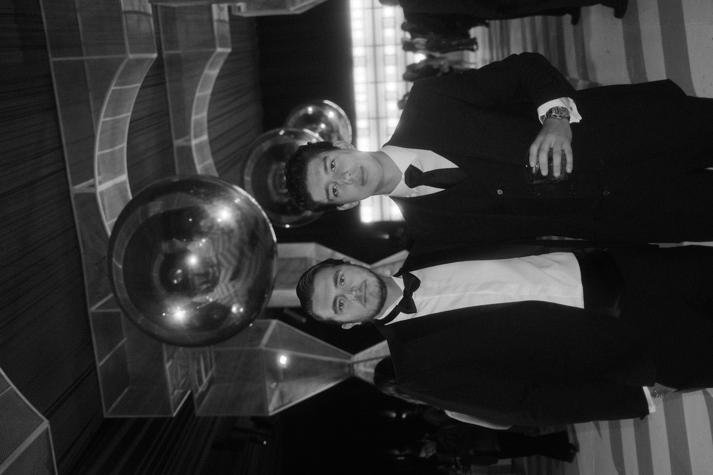

Lleva tu casa productora al siguiente nivel.
Un día intensivo en Guadalajara con los fundadores de Two Waves. Negocio, técnica y los secretos de trabajar con marcas globales. Para filmmakers y creadores que van en serio.
Aplica por tu lugar 2 min de aplicación · Cada solicitud se revisa personalmenteConstruido para participar, no para ver. Un grupo reducido de filmmakers y creadores que quieren convertir su talento en un negocio que escale: una casa productora con dirección, clientes y estructura.
- Escalar
- Monetizar
- Técnica
- Marcas
- Mentoría
Un día, todo lo que nadie te cuenta.
Cómo crecer y estructurar tu casa productora: precios, procesos y equipo para dejar de improvisar.
Lo que no se enseña en un curso: decisiones de dirección, cámara y post que se ganan con años en set.
Cómo llegamos a clientes de marca y turismo de estado, y cómo posicionarte para trabajar en esa liga.
Tiempo directo con nosotros para tus preguntas, tu portafolio y tu siguiente paso.

Roberto & Rogelio
Años en la industria trabajando con marcas globales y turismo de estados, generando cientos de miles de dólares en revenue con Two Waves. No es teoría: es lo que hacemos todos los días.
Un día intensivo, en un estudio.




Todo lo que necesitas saber.
Para filmmakers y creadores de contenido que ya producen y quieren llevar su marca o casa productora al siguiente nivel: escalar, profesionalizarse y trabajar con mejores clientes.
Un día completo con nosotros en un estudio: masterclass de negocio, sesión técnica práctica, comida, networking, cena y un invitado sorpresa. Además, acceso directo para mentoría.
En Guadalajara, en un estudio (sede por confirmar). Fecha tentativa: 18 de agosto de 2026. Confirmamos lugar y hora exactos a los seleccionados.
Limitado a 20 personas. Lo mantenemos chico a propósito para que haya acceso real y conversación de calidad.
Es por aplicación. Compartimos la inversión en la llamada, una vez que confirmamos que hay match. Así nos aseguramos de que sea el lugar correcto para ti.
Toca "Aplica por tu lugar", llena la aplicación de 2 minutos y nos pondremos en contacto con los seleccionados para una breve llamada.